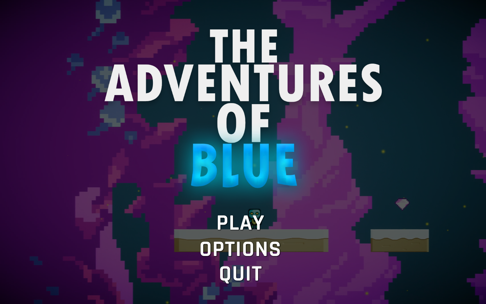
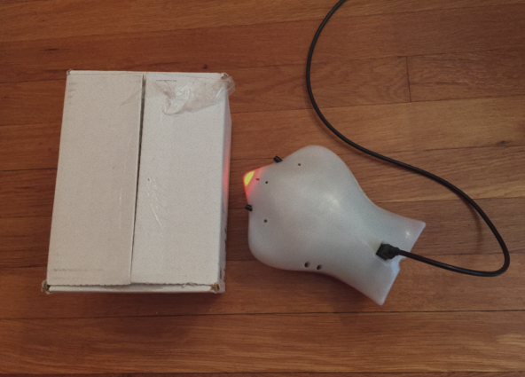

Projects
Forgotten Memories

Forgotten Memories is a work in progress, however it is a 3D adventure/exploration game that is developed and designed from scratch in Unity Game engine. The player starts the game off with having recently come out of hospital with memory loss regarding the past, to gather fragments of the past, the player would have to experience and find specific objects that could spark regain in memory.
Urban Wards

Urban Wards is a 3D serious hazard perception game developed for my University final year project. The game consists of 3 levels ranging from day time to different urban environments. The video game was developed with the target audience in mind which is primarily for Older adults. No prior knowledge of Unity or C# before undertaking project including the writing of the dissertation which all was completed and played-through in 6 months.

Adventures Of Blue
Adventures Of Blue is a 2D platformer that was developed within a week purely to get experience working with 2D and to set myself a personal challenge of developing a game in 1 week. You get to play as the character "Blue" who is trapped in a cave filled with moving platforms, traps and dangerous enemies. You must navigate through each level collecting Gems where you will be rewarded with score points. Responsibilities consist of; Core gameplay mechanics, level design, character/enemy design and implementation, scripting and other bonus gameplay mechanics.

Follow Object
 First year project included object oriented programming with Java and Finch robots. My specific project was to have the robot follow an object if the sensors detected an object infront and tapped once.
I had to also ensure that the robot was able to change its colour according to its action and if a possible collision was to occur, the finch would stop and display a red colour.